Действие
Контроль
Управляет действием UI.
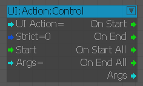
Конец
Конечный узел для действия UI.
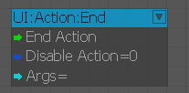
Старт
Начальный узел для действия UI.
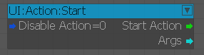
Дисплей
заранее
Узел для продвижения UIElement.
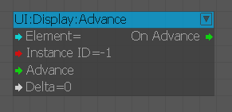
Конфигурация
Узел для настройки флагов для UIElements.
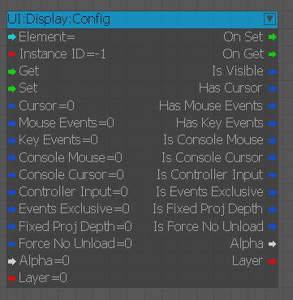
Ограничения
Узел для настройки ограничений для UIElements.
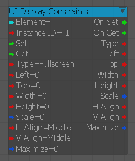
Дисплей
Узел для отображения/скрытия/перезагрузки UIElements.
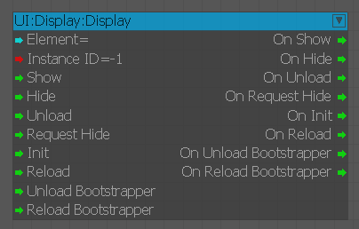
Слой
Узел для настройки слоя UIElements.
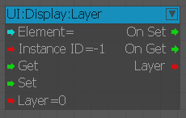
RayToFlashSpace
Создает луч, находит точку попадания во флэш-пространстве и вызывает функцию.
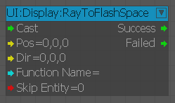
ScreenPos
Узел для преобразования положения экрана (значение 0–1) в фактическое положение X,Y во флэш-ресурсе.
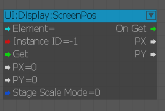
UIElementInstance
Узел для удаления экземпляров UIElements и получения уведомлений о новых/уничтоженных экземплярах UIElements.
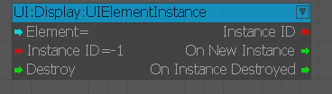
UIElementListener
Узел получает уведомления об отображении/скрытии/загрузке/выгрузке UIElements.
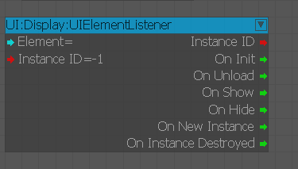
WorldScreenPos
Узел для преобразования мирового положения в фактическое значение X, Y, Z и масштаба во флэш-ресурсе.
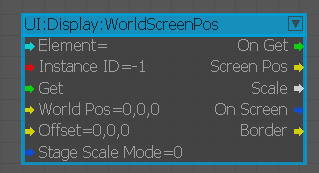
События
OnConnect
Срабатывает при подключении к серверу (не в редакторе!).
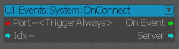
OnDisconnect
Срабатывает при отключении от сервера (не в редакторе!).
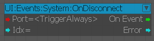
OnGamePause
Срабатывает, если игра приостановлена (не в редакторе!).
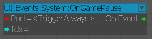
OnGameResume
Срабатывает, если игра возобновляется (не в редакторе!).
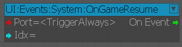
OnGameplayEnded
Срабатывает, если игровой процесс заканчивается (не в редакторе!).
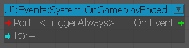
OnGamePlayStarted
Срабатывает, если начинается игровой процесс (не в редакторе!).
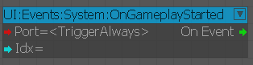
OnLoadingComplete
Срабатывает, если загрузка завершена (не в редакторе!)
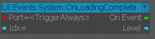
OnLoadingError
Срабатывает, если при загрузке произошла ошибка (не в редакторе!).
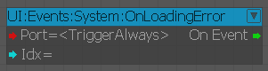
OnLoadingProgress
Срабатывает во время загрузки (не в редакторе!)
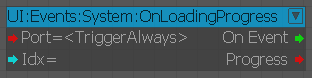
OnLoadingStart
Срабатывает, если уровень загружается (не в редакторе!).
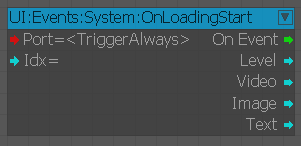
OnReload
Срабатывает, если UI перезагружается (не в редакторе!).
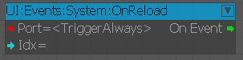
OnSystemShutDown
Срабатывает, если система выключается (не в редакторе!).
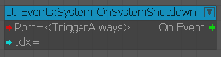
OnSystemStarted
Срабатывает, если система запущена (не в редакторе!).
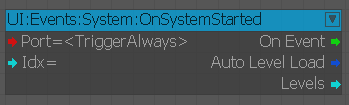
OnUnloadComplete
Срабатывает, если выгрузка уровня завершена (не в редакторе!).
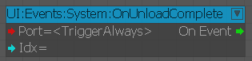
OnUnloadStart
Срабатывает, если начинается выгрузка уровня (не в редакторе!).
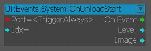
Функции
UnloadAllElements
Выгружает все элементы UI (пропускает элементы, определенные во входных данных массива).
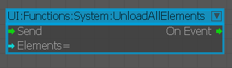
MovieClip
GotoAndPlay
Предоставляет доступ к MovieClips.
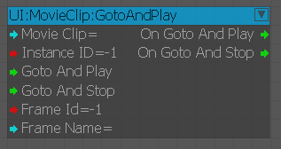
PosRotScale
Предоставляет доступ к позициям/повороту/масштабу для MovieClips.
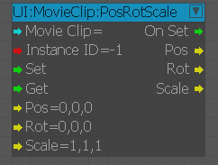
Видимый
Предоставляет видимый/альфа-доступ к MovieClips.
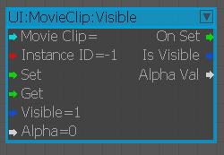
Шаблон
CreateMovieClip
Создайте MovieClip и присоедините его к данному родителю MovieClip.
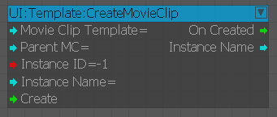
RemoveMovieCLip
Удаляет MovieClip.
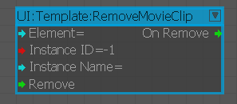
Утилита
FromArray
Получает значения из массива UI.
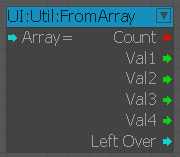
FromArrayByIndex
используется для получения определенного значения из массива UI.
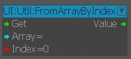
MergeArrays
Используется для объединения двух массивов.
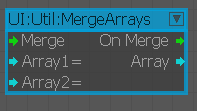
Платформа
Узел для получения текущей платформы работает также с выбранной платформой UIEmulator.
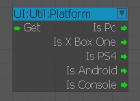
ToArray
Используется для создания массива UI.
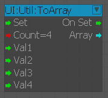
UIDelay
Этот узел будет задерживать передачу сигнала от [In] к [Out] на указанное количество секунд в [Delay].
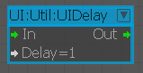
Переменная
Массив
Используется для предоставления доступа к массивам.
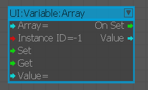
Вар
Используется для предоставления доступа к переменным.
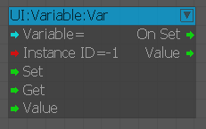